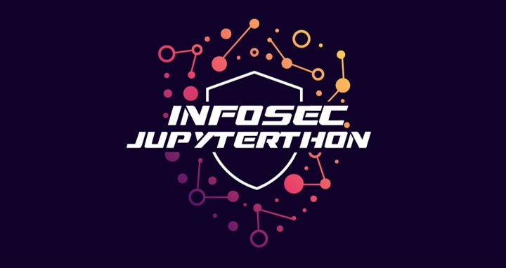

Infosec Jupyterthon!
Contents
Infosec Jupyterthon!#
Agenda • Registration • CFN • Sponsors • Collaborators • Conduct • Previously



An open community event for security researchers to share their experience and favorite notebooks with the InfoSec community. We meet virtually, share notebooks, and have fun learning more about Jupyter notebooks applied to the InfoSec field. A great place to meet other Infosec Jovyans!
Quick Information#
When? December 2nd and 3rd, 2022 (Detailed Schedule)
Where? Live Stream
How Much? FREE
Discord Server
Invite Link: https://aka.ms/JupyterthonDiscord
Channel: OTR Conferences > Jupyterthon
Registration#
Call For Notebooks#
If you are using Jupyter notebooks for any use case applied to Infosec, we want to hear from you! Presentation slides are not required. You and a notebook is enough!.
CFN form: https://aka.ms/Jupyterthon22CFN
CFN starts: October 25th, 2022
CFN ends: November 28th, 2022
A few submission guidelines#
Well documented notebook with enough context (e.g. Markdown text) to tell the story behind your research.
A well defined step by step process to go from basic to advanced skills.
Use of open source code (e.g pandas) to allow attendees to replicate the research at home.
Notebook and data should be freely releasable if possible.
Talk types:
Lightning Talk - 5 minutes (i.e., Quick Idea, Favorite Notebook, Tips and Tricks)
Short Presentation - 15 minutes
Long Presentation - 30 minutes
Sponsors#

|
Community Collaborators#

|

|

|

|

|

|

|

|
What is a Jovyan 🪐#
You may see the word Jovyan used in Jupyter tools (such as the user ID in the Jupyter Docker stacks or referenced in conversations. But what is a Jovyan?
In astronomical terms, the word “Jovian” means “like Jupiter”. It describes several planets that share Jupyter-like properties.
Much like the planet Jupiter and our solar system, the Jupyter community is large, distributed, and nebulous. We like to use the word Jovyan to describe members of this community. Jovyans are fellow open enthusiasts that use, develop, promote, teach, learn, and otherwise enjoy tools in Jupyter’s orbit. They make up the Jupyter community. If you’re not sure whether you’re a Jovyan, you probably are :-)